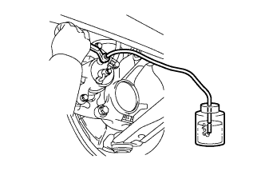

BỘ TRỢ LỰC PHANH > LẮP |
| 1. LẮP CỤM TRỢ LỰC PHANH |
Lắp một gioăng bộ trợ lực phanh.
 |
Lắp bộ trợ lực bằng 4 đai ốc.
Lắp chạc chữ U cần đẩy.
Bôi mỡ Glycol gốc xà phòng Lithium lên chốt chạc chữ U.
 |
Lắp chốt chạc chữ U và một kẹp mới.
Lắp lò xo hồi.
| 2. KIỂM TRA VÀ ĐIỀU CHỈNH CẦN ĐẨY BỘ TRỢ LỰC PHANH |
Hãy đặt SST lên xi lanh chính và sau đó hạ thấp chốt cho đến khi đỉnh của nó chạm nhẹ và píttông.
Lật ngược SST xuống và sau đó đặt nó lên bộ trợ lực.
Đo khe hở giữa cần đẩy bộ trợ lực phanh và đầu chốt (SST).
 |
Để điều chỉnh khe hở của cần đẩy, trước hết đạp bàn đạp phanh sao cho cần đẩy nhô lên. Sau đó cố định cần đẩy tại vị trí đó bằng SST và quay đai ốc lục giắc để điểu chỉnh khe hở.
| 3. LẮP CỤM XI LANH PHANH CHÍNH (w/o ABS) |
 |
Lắp gioăng chữ O mới vào xi lanh chính.
Lắp xi lanh phanh chính và giá bắt (cút 4 ngả) vào bộ trợ lực phanh bằng 2 đai ốc.
 |
Dùng SST, lắp 6 đường ống phanh C vào xi lanh phanh chính và cút chữ thập.
Nối giắc công tắc cảnh báo mức dầu phanh B vào xi lanh chính.
Lắp ống bình chứa li hợp A vào xi lanh chính.
| 4. LẮP XI LANH PHANH CHÍNH (w/ ABS) |
 |
Lắp gioăng chữ O mới vào xi lanh chính.
Lắp xi lanh phanh chính và giá bắt (với cút chữ T) vào bộ trợ lực phanh bằng 2 đai ốc.
Dùng SST, lắp 5 đường ống phanh C vào xi lanh phanh chính và cút chữ T.
Nối giắc công tắc cảnh báo mức dầu phanh B vào xi lanh chính.
Lắp ống bình chứa li hợp A vào xi lanh chính.
| 5. ĐỔ DẦU PHANH VÀO BÌNH CHỨA |
 |
| 6. XẢ KHÍ KHỎI XI LANH PHANH CHÍNH |
 |
Dùng SST, tháo 2 đường ống phanh ra khỏi xi lanh phanh chính.
Đạp từ từ bàn đạp phanh và giữ nó ở đó.
 |
Bịt các lỗ bên ngoài bằng ngón tay của bạn và nhả bàn đạp phanh.
Lặp lại các bước 3 hoặc 4 hai lần.
Dùng SST, lắp 2 đường ống phanh vào xi lanh phanh chính.
| 7. XẢ KHÍ ĐƯỜNG ỐNG PHANH |
Tháo nắp nút xả khí.
|  |
Lắp ống nhựa vào nút xả khí.
Đạp bàn đạp phanh vài lần và sau đó nới lỏng nút xả khí với bàn đạp phanh đang được nhấn xuống.
Khi dầu ngừng chảy ra, hãy xiết ngay nút xả khí. Sau đó nhả bàn đạp.
Lặp lại 2 bước trên cho đến khi khí trong dầu phanh được xả hết.
Xiết chặt nút xả khí.
Lắp nắp.
Xả khí ra khỏi ống phanh cho từng bánh xe bằng cách lặp lại các quy trình trên.
| 8. XẢ KHÍ ĐƯỜNG ỐNG LI HỢP |
Tháo nắp nút xả khí.
Lắp ống nhựa vào nút xả khí.
Đạp bàn đạp li hợp vài lần và sau đó nới lỏng nút xả khí trong khi đạp bàn đạp xuống.
Tại điểm mà dầu ngừng chảy ra, xiết chặt nút xả và sau đó nhả bàn đạp li hợp.
Lặp lại 2 bước trước đó cho đến khi xả được xả ra khỏi hệ thống.
Xiết chặt nút xả khí.
Lắp nắp nút xả khí.
Kiểm tra rằng tất cả khí đã được xả ra khỏi đường ống li hợp.
| 9. KIỂM TRA VÀ ĐIỀU CHỈNH CHIỀU CAO BÀN ĐẠP PHANH |
 |
Kiểm tra chiều cao bàn đạp.
Điều chỉnh chiều cao bàn đạp.
Tháo giắc nối công tắc đèn phanh.
Tháo công tắc.
Nới lỏng đai ốc hãm chạc chữ U của cần đẩy.
Điều chỉnh độ cao bàn đạp bằng cách vặn cần đẩy.
Xiết chặt đai ốc hãm.
 |
Lắp công tắc vào bộ điều chỉnh cho đến khi nó chạm nhẹ vào bàn đạp.
 |
Vặn công tắc 1/4 vòng theo chiều kim đồng hồ.
Lắp giắc nối vào công tắc.
Kiểm tra khe hở công tắc.
| 10. KIỂM TRA HÀNH TRÌNH TỰ DO CỦA BÀN ĐẠP PHANH |
Tắt máy. Hãy đạp phanh một vài lần cho đến khi không có chân không trong bộ trợ lực. Sau đó nhả bàn đạp.
Nhấn bàn đạp cho đến khi cảm nhận được có lực cản.
Kiểm tra hành trình tự do của bàn đạp bằng cách đo khoảng cách giữa vị trí ở bước trước đó và vị trí nhả bàn đạp.
Kiểm tra khe hở công tắc.
| 11. KIỂM TRA KHOẢNG DỰ TRỮ BÀN ĐẠP PHANH |
Nhả cần phanh tay. Khởi động động cơ.
Đạp bàn đạp và kiểm tra khoảng cách dự trữ của bàn đạp.
Nhấn bàn đạp với một lực 490 N (50 kgf, 110 lbf).
Đo khoảng cách giữa bàn đạp và tấm vách ngăn như chỉ ra trong hình vẽ.
| 12. KIỂM TRA MỨC DẦU PHANH TRONG BÌNH CHỨA |
 |
Kiểm tra mức dầu và đổ thêm dầu phanh nếu cần.
| 13. KIỂM TRA RÒ RỈ DẦU PHANH |